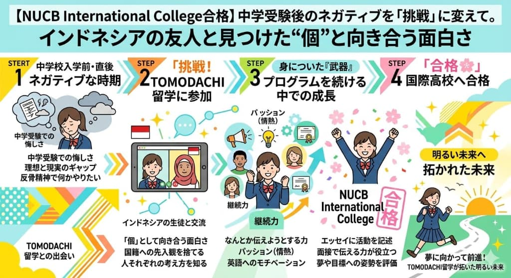
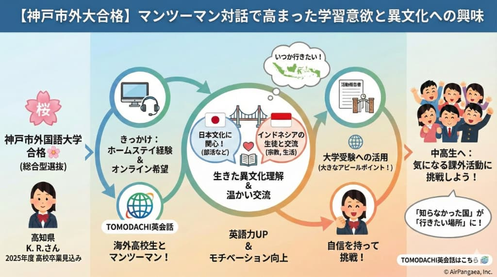
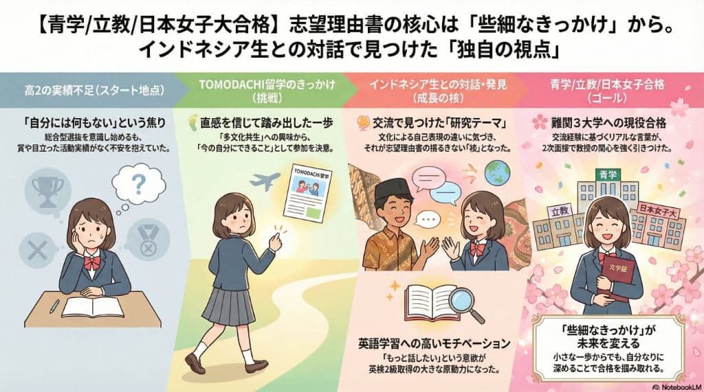

高校受験
慶應義塾ニューヨーク学院 合格 🌸
双子姉妹で合格 -- 面接本番で「話し足りない！」と言える自信を育んだ、海外同世代との対話

記事全文を読む →「海外の同世代と対話を重ねるうちに、面接本番で"もっと話したい！"と自然に思えるようになりました。先生ではなく友達だからこそ、本音で話せる力が身についたと思います。」
TOMODACHI留学で広がった進路
体験記をご寄稿いただいた方の進路先（一部）
記事全文を読む →「海外の同世代と対話を重ねるうちに、面接本番で"もっと話したい！"と自然に思えるようになりました。先生ではなく友達だからこそ、本音で話せる力が身についたと思います。」

記事全文を読む →「中学受験の挫折をきっかけに始めたTOMODACHI留学。インドネシアの友人との交流を通じて、"自分らしさ"と向き合う面白さに気づき、新しい挑戦への一歩を踏み出せました。」

記事全文を読む →「海外の同世代とマンツーマンで話す経験が、異文化への興味を大きく広げてくれました。英語を"勉強"ではなく"コミュニケーション"として捉えられるようになったことが、合格への大きな力になりました。」

記事全文を読む →「インドネシアの生徒との何気ない会話から見つけた"独自の視点"が、志望理由書の核心になりました。些細なきっかけが、自分だけのストーリーを作る力になるんだと実感しています。」
当社の他のプログラム（異文化交流、SDGs協働学習など）に参加された方々も、多くの進路実績を残されています。以下のような合格体験記も公開中です。
TOMODACHI留学に参加した生徒たちの、英語力だけでなく人間的な成長の記録をご覧いただけます。Before & Afterで見る、リアルな変化のストーリーです。
学びの軌跡を見る →